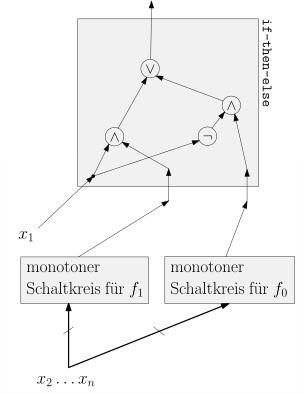
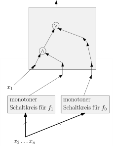
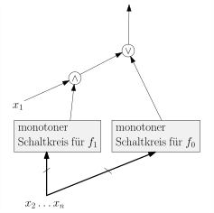

import Section from "~/components/Section";
import Paragraph from "~/components/Paragraph";
import Container from "~/components/Container";
import Carousel from "~/components/Carousel";
import NumberedTitle from "~/components/NumberedTitle";
const Article = () => {
  return (
    <Container>
      <Section
        count={5}
        title_gr="Monotone Funktionen und monotone Schaltkreise"
        title_en="monotone circuits"
        number={1.4}
        counter="DefCtr"
        counter="ExoCtr"
        path="/lecture-notes5.tsx">
        <div id="link-to-toc">
          <a href="../vorlesungsskript">
            Inhaltsverzeichnis
          </a>
          <a href="01-03-binary-adder">
            &lt;&lt; Kapitel 1.3
          </a>
        </div>
        <div
          id="link-to-overview"
          style="text-align: end">
          <a href="/">
            zur Kursübersicht
          </a>
          <a href="01-05-majority">
            Kapitel 1.5 &gt;&gt;
          </a>
        </div>
        <div id="rightSideWrapper">
          <div class="content">
            <div class="chapter">
              <div class="subChapter">
                <h1 class="hidden-title">
                  <span class="subChapterTitle">
                    1.4 
                    Monotone Funktionen und monotone Schaltkreise
                  </span>
                </h1>
                <Paragraph>
                  Für zwei Tupel \(\mathbf&#123;x&#125;, \mathbf&#123;y&#125; \in \&#123;0,1\&#125;^n\) schreiben wir
                  \( \mathbf&#123;x&#125; \leq \mathbf&#123;y&#125;\), falls \(x_1 \leq y_1, \dots, x_n \leq y_n\), also
                  \(\mathbf&#123;x&#125;\){" "}
                  <i>
                    in jeder Koordinate
                  </i>
                  {" "}kleiner gleich \(\mathbf&#123;y&#125;\) ist.
                  Beispielsweise gilt \( (0,0,1) \leq (1,0,1)\). Allerdings gilt weder
                  \( (0,1,0) \leq (1,0,1)\) noch umgekehrt; die beiden Tupel sind{" "}
                  <i>
                    unvergleichbar
                  </i>
                  ;
                  es handelt sich bei \(\leq\) also um eine{" "}
                  <i>
                    Partialordnung
                  </i>
                  .
                  Am Besten stellen Sie sich eine solche Partialordnung als gerichteten Graphen vor:
                </Paragraph>
                <figure>
                  
                </figure>
                <Paragraph>
                  Diese Darstellung einer Partialordnung als gerichteter Graph bezeichnet man auch als
                  <i>
                    Hasse-Diagramm
                  </i>
                  {" "}(ich verzichte hier auf eine formale Definition).
                  Es gilt nun \(\mathbf&#123;x&#125; \leq \mathbf&#123;y&#125;\), wenn Sie im Hasse-Diagramm einen
                  Pfad von \(\mathbf&#123;x&#125;\) nach \(\mathbf&#123;y&#125;\) finden.
                </Paragraph>
                <Paragraph>
                  {" "}{" "}
                  <b>
                    Vorsicht.
                  </b>
                  {" "}Im obigen Bild steht zwar \(001\) unterhalb von \(110\), allerdings
                  werden Sie keinen Pfad von \(001\) nach \(110\) finden;
                  es gilt also \(001 \not \leq 110\); die beiden Elemente sind{" "}
                  <i>
                    unvergleichbar
                  </i>
                  .
                </Paragraph>
                <div class="well container theorem">
                  <span class="numbered-title">
                    Definition
                    <NumberedTitle>
                      &ensp;1.4.1{" "}
                    </NumberedTitle>
                  </span>
                  Eine Boolesche Funktion \(f: \&#123;0,1\&#125;^n \rightarrow \&#123;0,1\&#125;\) heißt
                  <i>
                    monoton
                  </i>
                  , wenn
                  $$
                  \forall \mathbf&#123;x&#125; \leq \mathbf&#123;y&#125; \in \&#123;0,1\&#125;^n \ : \
                  f(\mathbf&#123;x&#125;) \leq f(\mathbf&#123;y&#125;) \ .
                  $$
                  In anderen Worten: wenn wir ein Input-Bit von 0 auf 1 ändern, kann das Output-Bit
                  nicht von 1 auf 0 umkippen.
                </div>
                <div class="well well-lg numbered-exercise container">
                  <span class="numbered-title">
                    Übungsaufgabe
                    <NumberedTitle>
                      &ensp;1.4.1{" "}
                    </NumberedTitle>
                  </span>
                  Welche der Booleschen Funktionen \(\wedge, \vee, \neg, \oplus, \maj\) sind monoton?
                </div>
                <Paragraph>
                  Funktionen auf wenigen Variablen können wir graphisch darstellen und somit
                  erkennen, ob sie monoton sind oder nicht. Für eine Funktion
                  \( f: \&#123;0,1\&#125;^2 \rightarrow \&#123;0,1\&#125;\) markieren
                  wir im Hasse-Diagramm von \(\&#123;0,1\&#125;^2\) diejenigen Elemente blau,
                  auf denen \(f(x,y) = 1\) ist, und die anderen rot.
                </Paragraph>
                <figure>
                  
                </figure>
                <Paragraph>
                  Wir sehen nun, dass es im Bild von \(\wedge\) keinen roten Punkt gibt,
                  der oberhalb eines blauen Punktes liegt, im Bild von \(\oplus\) allerdings
                  schon. Der Grund: \(\wedge\) ist monoton, \(\xor\) ist es nicht.
                  Formaler argumentiert: in der Partialordnung gilt \(01 \leq 11\) aber
                  \(\xor (0,1) \gt \xor (1,0)\), was der Definition einer monotonen Funktion
                  widerspricht. (Ich habe hier absichtlich die Präfixschreibweise \(\xor(0,1)\) verwendet,
                  um hervorzuheben, dass es sich hierbei um eine Funktion in zwei Variablen handelt.)
                  Beachten Sie, dass ich die Worte{" "}
                  <i>
                    "oberhalb"
                  </i>
                  {" "}im Sinne der Partialordnung
                  meine, nicht wirklich im geometrischen Sinne in der Abbildung.
                </Paragraph>
                <Paragraph>
                  Von den Basis-Gates \(\wedge, \vee, \neg\) sind \(\wedge\) und \(\vee\) monoton,
                  \(\neg\) ist es nicht.
                  Es sollte also klar sein, dass ein Schaltkreis ohne Negation immer eine monotone Funktion
                  berechnet. Allerdings stimmt der Umkehrschluss nicht. Der Schaltkreis
                  <figure>
                    
                  </figure>
                  ist nicht monoton (beachten Sie hinter der \(\bar&#123;y&#125;\)-Schreibweise versteckte NOT-Gate),
                  ist aber äquivalent zu der offensichtlich monotonen Funktion \(x\). Allerdings können wir
                  folgendes beweisen:
                </Paragraph>
                <div
                  id="theorem-monotone"
                  class="well container theorem">
                  <span class="numbered-title">
                    Theorem
                    <NumberedTitle>
                      &ensp;1.4.2{" "}
                    </NumberedTitle>
                  </span>
                  Zu jeder monotonen Funktion \(f: \&#123;0,1\&#125;^n \rightarrow \&#123;0,1\&#125;\) gibt es einen monotonen
                  Schaltkreis (also ohne NOT-Gates), der \(f\) berechnet.
                </div>
                <div class="well well-lg numbered-exercise container">
                  <span class="numbered-title">
                    Übungsaufgabe
                    <NumberedTitle>
                      &ensp;1.4.2{" "}
                    </NumberedTitle>
                  </span>
                  Beweisen Sie das Theorem.{" "}
                  <b>
                    Tip.
                  </b>
                  {" "}Gehen Sie meine oben skizzierten drei
                  Konstruktionen durch (Rekursiv, DNF, CNF) und versuchen Sie, sie so zu modifizieren,
                  dass Sie alle NOT-Gates loswerden.
                </div>
                <div class="well well-lg numbered-exercise container">
                  <span class="numbered-title">
                    Übungsaufgabe
                    <NumberedTitle>
                      &ensp;1.4.3{" "}
                    </NumberedTitle>
                  </span>
                  Finden Sie alle monotonen Funktionen in zwei Variablen.
                  Wie sieht es mit allen monotonen Funktionen in{" "}
                  <i>
                    drei
                  </i>
                  {" "}Variablen aus?
                  <Paragraph>
                    Am Besten betrachten Sie das{" "}
                    <i>
                      Hasse-Diagramm
                    </i>
                    {" "}der
                    Partialordnungen auf Mengen \( \&#123;0,1\&#125;^2\) bzw. \( \&#123;0,1\&#125;^3\):
                  </Paragraph>
                  <figure>
                    
                  </figure>
                  <Paragraph>
                    und überlegen sich, wie Sie die vier bzw. acht Knoten auf monotone Weise in einen
                    1-Bereich und einen 0-Bereich aufteilen können.
                  </Paragraph>
                </div>
                <div class="well well-lg numbered-exercise container">
                  <span class="numbered-title">
                    Übungsaufgabe
                    <NumberedTitle>
                      &ensp;1.4.4{" "}
                    </NumberedTitle>
                  </span>
                  &ensp;
                  <b>
                    (Challenge).
                  </b>
                  Bauen Sie einen Schaltkreis mit drei Input-Variablen \(x,y,z\), der drei
                  Output-Gates hat, die \(\bar&#123;x&#125;, \bar&#123;y&#125;, \bar&#123;z&#125;\) berechnen.
                  Ihr Schaltkreis darf{" "}
                  <i>
                    höchstens zwei NOT-Gates
                  </i>
                  {" "}einhalten,
                  aber beliebig viele AND- und OR-Gates.
                  <figure>
                    
                  </figure>
                </div>
                <h1>
                  Lösungen zu den Übungsaufgaben
                </h1>
                <Paragraph>
                  Ich lege Ihnen sehr ans Herz, die obigen Übungsaufgaben selbständig
                  zu bearbeiten. Falls Sie dennoch die Geduld verlieren,
                  so habe ich hier Lösungen ausgearbeitet. Auch mit dem Zweck, an dieser
                  Stelle auf Beweismethoden wie{" "}
                  <i>
                    Induktion
                  </i>
                  {" "}und verschiedene
                  Beweisstrategien einzugehen.
                </Paragraph>
                <div
                  id="theorem-1"
                  class="well container theorem">
                  <span class="numbered-title">
                    Theorem
                    <NumberedTitle>
                      &ensp;1.4.3{" "}
                    </NumberedTitle>
                  </span>
                  Zu jeder monotonen Funktion \(f: \&#123;0,1\&#125;^n \rightarrow \&#123;0,1\&#125;\) gibt es einen monotonen
                  Schaltkreis (also ohne NOT-Gates), der \(f\) berechnet.
                </div>
                <Paragraph>
                  Ich werde zweieinhalb Beweise für dieses Theorem vorstellen. Dies dient auch dazu,
                  gängige{" "}
                  <i>
                    Beweistechniken
                  </i>
                  {" "}und{" "}
                  <i>
                    Beweismethoden
                  </i>
                  {" "}zu illustrieren. Unter
                  Beweismethoden
                  verstehe ich hier formale Methoden wie
                  <ul>
                    <li>
                      Beweis durch Induktion,
                    </li>
                    <li>
                      Beweis durch Widerspruch,
                    </li>
                    <li>
                      Beweis durch vollständige Fallunterscheidung,
                    </li>
                    <li>
                      ...
                    </li>
                  </ul>
                  wie sie zum Beispiel auf
                  <a href="https://de.wikipedia.org/wiki/Beweis_(Mathematik)#Beweismethoden">
                    &ensp;Wikipedia{" "}
                  </a>
                  &ensp;aufgeführt
                  sind.
                  Diesen zur Seite stehen die nicht wirklich formalisierbaren Beweistechniken oder Beweisstrategien,
                  die sich oft aus persönlicher Erfahrung speisen, wie zum Beispiel
                  <ul>
                    <li>
                      kleine Beispiele untersuchen und dann verallgemeinern,
                    </li>
                    <li>
                      bereits Bekanntes abwandeln und hoffen, dass es funktioniert,
                    </li>
                    <li>
                      local change: ein Objekt schrittweise in die gewünschte Richtung verändern;
                    </li>
                  </ul>
                  da bei den Beweistechniken Erfahrung, Intuition und Kreativität mit ins Spiel kommen,
                  ist es unmöglich, eine vollständige Liste anzugeben; ich habe die drei obigen Punkte gewählt, weil
                  sie in der Tat das repräsentieren, was wir in den Beweisen jetzt verwenden werden.
                </Paragraph>
                <div class="well container">
                  {" "}{" "}
                  <b>
                    Erster Beweis. Top-Down mit `if-then-else`.
                  </b>
                  {" "}{" "}
                  <Paragraph>
                    In diesem Beweis verwende ich die zweite oben erwähnte Technik: bereits bekanntes
                    abwandeln. Was kennen wir denn bereits? Wir kennen
                    die{" "}
                    <a href="../vorlesungsskript.html#truth-table-top-down">
                      &ensp;Top-Down-Methode{" "}
                    </a>
                    , wie wir
                    aus einer Wahrheitstabelle einen Schaltkreis bauen:
                  </Paragraph>
                  <div class="well theorem subtheorem">
                    <span class="numbered-title">
                      Theorem
                      <NumberedTitle>
                        &ensp;1.4.4{" "}
                      </NumberedTitle>
                    </span>
                    Zu jeder Booleschen Funktion \(f: \&#123;0,1\&#125;^n \rightarrow \&#123;0,1\&#125;\) gibt es
                    einen Schaltkreis \(C\), der \(f\) berechnet.
                  </div>
                  <Paragraph>
                    Wir haben diese Konstruktion in der Vorlesung an einem Beispiel durchexerziert und auch
                    Größe und Tiefe des resultierenden Schaltkreises analysiert, allerdings haben wir
                    den Beweis nicht formal aufgeschrieben. Nutzen wir hier die Gelegennheit und
                    üben an diesem Beispiel das Finden und Führen mathematischer Beweise.
                    Beachten Sie, dass wir nun vorerst über allgemeine, nicht notwendigerweise monotone
                    Boolesche
                    Funktionen
                    reden. Falls Sie sich noch gut an unseren Beweis von Theorem 2 in der Vorlesung
                    erinnern können und eher an Theorem 1 als an allgemeinen Beweismethoden interessiert sind,
                    dürfen Sie gerne{" "}
                    <a href="#after-sub-proof">
                      &ensp;runterspringen.{" "}
                    </a>
                  </Paragraph>
                  <div class="well container-fluid">
                    <Paragraph>
                      {" "}{" "}
                      <b>
                        Beweis.
                      </b>
                      Als{" "}
                      <i>
                        Beweismethode
                      </i>
                      {" "}verwenden wir Induktion über \(n\), die Anzahl der Variablen.
                    </Paragraph>
                    <div class="alert-info">
                      Zur Erinnerung: bei einem Beweis per Induktion wollen wir eine Aussage
                      der Form{" "}
                      <i>
                        Für alle natürlichen Zahlen \(n \in \N\) gilt \(P(n)\)
                      </i>
                      {" "}beweisen,
                      wobei \(P(n)\) wiederum eine Aussage ist, in der die Zahl \(n\) irgendwo vorkommt.
                      Bei einem Beweis durch Induktion zeigen wir nun,
                      <ol>
                        <li>
                          dass \(P(0)\) gilt (
                          <b>
                            Induktionsbasis
                          </b>
                          ),
                        </li>
                        <li>
                          dass, wenn \(P(n)\) für eine Zahl \(n \in \N \) gilt, dann sicherlich
                          auch \(P(n+1)\) gilt (
                          <b>
                            Induktionsschritt
                          </b>
                          ).
                        </li>
                      </ol>
                      Wenn wir beide Teile gezeigt haben, können wir uns nun "hochhangeln":
                      \(P(0)\) gilt, weil wir in Punkt 1 gezeigt haben;
                      mit Hilfe von Punkt 2 können wir nun argumentieren, dass
                      aus \(P(0)\) die Aussage \(P(1)\) folgt;
                      dass aus \(P(1)\) die Aussage \(P(2)\) folgt; und so weiter.
                      Da wir auf diese Weise jede natürliche Zahl irgendwann erreichen,
                      können wir schlussfolgern, dass \(P(n)\) für jede Zahl \(n \in \Z\) gilt.
                    </div>
                    <Paragraph>
                      Als erstes müssen wir nun unsere Aussage, die wir beweisen wollen (also die im Theorem)
                      so formulieren, dass sie die Form{" "}
                      <i>
                        \(P(n)\) für alle \(n \in \N\)
                      </i>
                      {" "}annimmt.
                      Dies ist einfach, da die Zahl \(n\) bereits im Theorem vorkommt. Wir formulieren sie
                      also nun so um:
                    </Paragraph>
                    <div class="well theorem subtheorem">
                      <span class="numbered-title">
                        Theorem
                        <NumberedTitle>
                          &ensp;1.4.5{" "}
                        </NumberedTitle>
                        &ensp;1.4.4, alternative Formulierung
                      </span>
                      Für jede natürliche Zahl \(n\) gilt: zu jeder Booleschen Funktion
                      \(f: \&#123;0,1\&#125;^n \rightarrow \&#123;0,1\&#125;\) gibt es einen Schaltkreis \(C\), der
                      \(f\) berechnet.
                    </div>
                    <Paragraph>
                      Wir haben also im Prinzip Theorem 1.4.4 umständlicher formuliert, um die
                      Abhängigkeit von \(n\) zu verdeutlichen. Wir müssen nun Induktionsbasis und
                      Induktionsschritt durchführen.
                    </Paragraph>
                    <Paragraph>
                      {" "}{" "}
                      <b>
                        Induktionsbasis.
                      </b>
                      {" "}Wenn \(n=0\) ist, dann gibt es nur zwei mögliche
                      Boolesche
                      Funktionen,
                      nämlich die konstanten Funktionen \(0\) und \(1\). Für beide Funktionen
                      gibt es einen Schaltkreis, nämlich bestehend aus einem Input-Gate (mit
                      der Konstant 0 bzw. 1 beschriftet), das gleichzeitig auch Output-Gate ist.
                    </Paragraph>
                    <div class="alert-warning">
                      Vielleicht fühlen Sie sich unwohl bei der Idee, es mit Funktionen
                      mit
                      null Variablen tun zu haben. Allerdings: warum? In Java hätten Sie bestimmt kein Problem
                      mit
                      <pre
                        style="margin:2ch"
                        class="listing">
                        public boolean constantFalse() &#123;
                        return false;
                        &#125;
                        public boolean constantTrue() &#123;
                        return true;
                        &#125;
                      </pre>
                      und dies sind ja offensichtlich Boolesche Funktionen mit null Input-Variablen.
                      Ich nehme Ihre Ängste aber ernst, und in der Tat gibt es Fälle, wo es
                      sich nicht richtig anfühlt, den Induktionsbeweis bei \(0\) anzufangen.
                      In diesem Fall dürfen Sie die Induktionsbasis gerne bei \(n=1\) ansetzen
                      oder wo auch immer Sie sich "wohlfühlen"; sie müssen dann aber im Hinterkopf
                      behalten, dass Sie Ihre Aussage für \(n=0\) nicht bewiesen haben; machnmal
                      ist das unvermeidbar, weil manche Aussagen einfach z.B. erst ab \(n \geq 2\) gelten.
                      <Paragraph>
                        Wenn wir die Induktionsbasis bei \(n=1\) ansetzen wollen, dann sehen wir, dass
                        es{" "}
                        <i>
                          vier
                        </i>
                        {" "}Funktionen gibt: \(0, 1, x, \neg x\); all diese haben natürlich
                        einen
                        (sehr einfachen) Schaltkreis. Nur bei \(\neg x\) braucht unser Schaltkreis überhaupt
                        ein
                        Gate.
                      </Paragraph>
                      <Paragraph>
                        An diesem Punkt protestieren Sie vielleicht und sagen, dass \(0\) keine Funktion
                        in{" "}
                        <i>
                          einer
                        </i>
                        {" "}Variable ist, sondern in{" "}
                        <i>
                          zwei
                        </i>
                        {" "}Variablen.
                        Und auch hier appelliere ich an Ihre Programmiererfahrung: weder Sie
                        noch der Java-Compiler werden Probleme mit der Funktion
                      </Paragraph>
                      <pre
                        style="margin:2ch"
                        class="listing">
                        public boolean constantFalse(boolean x) &#123;
                        return false;
                        &#125;
                      </pre>
                      <Paragraph>
                        haben. Ja in der Tat, Java toleriert es, dass Sie{" "}
                        <code>
                          constantFalse
                        </code>
                        {" "}zweimal
                        deklariert haben, einmal als Funktion mit 0 Input-Variablen, einmal als
                        Funktion mit einer Input-Variablen. Um hundertprozentig korrekt zu sein, müssten wir
                        Funktionen \(\textnormal&#123;zero&#125;_n\) definieren als
                      </Paragraph>
                      $$\begin&#123;align*&#125;
                      \textnormal&#123;zero&#125;_n&amp;: \&#123;0,1\&#125;^n \rightarrow \&#123;0,1\&#125; \\
                      (x_1,\dots,x_n)&amp;\mapsto 0 \ .
                      \end&#123;align*&#125;$$
                      <Paragraph>
                        In der Praxis gehen wir in der Mathematik deutlich laxer mit Notation um und
                        hoffen, dass der Leser aus dem Kontext die richtige Interpretation herausliest:
                        ob \(0\) nun eine Konstante ist, eine Funktion mit einer Input-Variablen, mit zwei
                        Input-Variablen etc. In mathematischen Papern lesen Sie
                        in diesem Kontext manchmal{" "}
                        <a href="https://en.wikipedia.org/wiki/Abuse_of_notation">
                          {" "}{" "}
                          <i>
                            with abuse of
                            notation
                          </i>
                          {" "}{" "}
                        </a>
                        ,
                        womit die Autoren andeuten, dass sie ihre Notation nicht ganz korrekt anwenden, aber
                        davon ausgehen, dass Leser oder Leserin (die ja Menschen sind und keine Compiler),
                        verstehen, was gemeint ist.
                      </Paragraph>
                    </div>
                    <Paragraph>
                      Wir haben nun also die Induktionsbasis erfolgreich gezeigt. Als nächstes kommt nun der
                      Schritt. In diesem nehmen wir an, dass die Aussage \(P(n)\) bereits gilt,
                      und wollen davon ausgehend zeigen, dass auch \(P(n+1)\) gilt.
                      Alternativ können wir annehmen, dass \(P(n-1)\) gilt und wollen \(P(n)\) zeigen (wobei
                      wir nun \(n \geq 1\) annehmen müssen). Ob Sie
                      \(P(n) \Rightarrow P(n+1)\) oder \(P(n-1) \Rightarrow P(n)\) zeigen,
                      kommt aufs Gleiche raus und unterscheidet sich nur in der Notation; in diesem
                      Falle ist es mir angenehmer, \(P(n-1) \Rightarrow P(n)\) zu zeigen. Wir dürfen
                      also die{" "}
                      <i>
                        Induktionshypothese
                      </i>
                      {" "}\(P(n-1)\) als gegeben annehmen:
                    </Paragraph>
                    <div class="well subtheorem">
                      {" "}{" "}
                      <b>
                        Induktionshypothese.
                      </b>
                      Zu jeder Booleschen Funktion in \(n-1\) Variablen
                      gibt es einen äquivalenten Schaltkreis.
                    </div>
                    <Paragraph>
                      und wollen den Induktionsschritt vollziehen, also \(P(n)\) zeigen:
                    </Paragraph>
                    <div class="well subtheorem">
                      {" "}{" "}
                      <b>
                        Ziel des Induktionsschritts.
                      </b>
                      Zu jeder Booleschen Funktion in \(n\) Variablen
                      gibt es einen äquivalenten Schaltkreis.
                    </div>
                    <Paragraph>
                      {" "}{" "}
                      <b>
                        Beweistechnik/-strategie
                      </b>
                      . Um den Induktionsschritt
                      vollziehen zu können, müssen wir irgendwie die \(n\)-stellige
                      Funktion \(f\) auf sinnvolle Weise in \(n-1\)-stellige Funktionen
                      "zerlegen". Hier ist im Allgemeinen Kreativität gefragt.
                      Im vorliegenden Falle ist es aber recht klar, welche Zerlegung in Frage kommt.
                      Wir definieren zwei neue, "kleinere" Funktionen
                      \(f_0, f_1: \&#123;0,1\&#125;^&#123;n-1&#125; \rightarrow \&#123;0,1\&#125;\) per
                      $$\begin&#123;align*&#125;
                      f_0 (x_2, \dots, x_n)&amp;:= f(0, x_2, \dots, x_n) \\
                      f_1 (x_2, \dots, x_n)&amp;:= f(1, x_2, \dots, x_n) \ .
                      \end&#123;align*&#125;$$
                      In anderen Worten, wir fixieren das erste Input-Bit auf einen konstanten Wert und
                      erhalten so
                      eine Funktion in \(n-1\) Variablen.
                      Die Funktion \(f_0\) ist im Prinzip die obere Hälfte der Wahrheitstabelle, und
                      \(f_1\) ist die untere Hälfte.
                      Da \(f_0\) und \(f_1\) jeweils nur \(n-1\) Input-Variablen haben,
                      können wir die Induktionshypothese anwenden und folgern,
                      dass es Boolesche Schaltkreise für sie gibt.
                      Nach{" "}
                      <i>
                        Zerlegen in \(f_0, f_1\)
                      </i>
                      {" "}und
                      <i>
                        Anwenden der Induktionshypothese
                      </i>
                      {" "}müssen wir nun
                      die Teilergebnisse wieder{" "}
                      <i>
                        sinnvoll zusammenfügen
                      </i>
                      . Dies
                      tun wir in diesem Falle mit einem `if-then-else`-Gate:
                    </Paragraph>
                    <figure>
                      
                    </figure>
                    <Paragraph>
                      Ich behaupte, dass obiger Schaltkreis tatsächlich \(f\) berechnet. Falls dies noch nicht
                      klar sein sollte, können wir auch dies formal beweisen, und zwar
                      durch die Methode{" "}
                      <i>
                        vollständige Fallunterscheidung.
                      </i>
                      {" "}Sei
                      nun also ein konkreter Input \(x_1,\dots,x_n\) gegeben.
                    </Paragraph>
                    <ul>
                      <li>
                        Der Fall \(x_1 = 1\). Dann gibt der obige Schaltkreis
                        den Wert \(f_1(x_2,\dots,x_n\) aus, was per Definition von \(f_1\)
                        gleich \(f(1, x_2,\dots,x_n) = f(x_1,\dots,x_n)\) ist. Er gibt also den korrekten
                        Wert aus.
                      </li>
                      <li>
                        Der Fall \(x_1 = 0\). Dann gibt der obige Schaltkreis
                        den Wert \(f_0(x_2,\dots,x_n\) aus, was per Definition von \(f_0\)
                        gleich \(f(0, x_2,\dots,x_n) = f(x_1,\dots,x_n)\) ist. Er gibt also auch hier den
                        korrekten
                        Wert aus.
                      </li>
                    </ul>
                    <Paragraph>
                      Wir haben also erfolgreich einen Schaltkreis für
                      \(f: \&#123;0,1\&#125;^n \rightarrow \&#123;0,1\&#125;\) konstruiert. Unser Induktionsbeweis von Theorem 2
                      ist nun
                      abgeschlossen.{" "}
                      <span class="qed">
                        \(\square\)
                      </span>
                    </Paragraph>
                  </div>
                </div>
                <Paragraph id="after-sub-proof">
                  Diesen "hellblauen" Beweis haben wir ja bereits in der Vorlesung
                  geführt. Ich habe ihn hier wiederholt und in größerem Detail besprochen, um
                  auf verschiedene formale Aspekte der Beweisführung einzugehen. Wenden wir uns
                  jetzt dem Beweis von{" "}
                  <a href="#theorem-1">
                    &ensp;Theorem 1.4.3{" "}
                  </a>
                  &ensp;zu.{" "}
                </Paragraph>
                <div class="well container">
                  {" "}{" "}
                  <b>
                    Theorem 1.4.3, nochmals.
                  </b>
                  Zu jeder monotonen Funktion \(f: \&#123;0,1\&#125;^n \rightarrow \&#123;0,1\&#125;\) gibt es einen monotonen
                  Schaltkreis (also ohne NOT-Gates), der \(f\) berechnet.
                </div>
                <div class="well container">
                  {" "}{" "}
                  <b>
                    Erster Beweis. Top-Down mit `if-then-else`.
                  </b>
                  {" "}{" "}
                  <Paragraph>
                    Wir verfolgen die Beweistechnik "Bekanntes abwandeln und hoffen".
                    Das Bekannte ist die Konstruktion im Beweis von Theorem 1, also
                    die top-down-Konstruktion. Wir gehen wieder induktiv vor (allerdings
                    bin ich jetzt weniger formal und weise Sie nicht mehr ständig auf die
                    Bestandteile eines Induktionsbeweises hin) und zerlegen \(f: \&#123;0,1\&#125;^n \rightarrow \&#123;0,1\&#125;\)
                    in
                    zwei neue, "kleinere" Funktionen
                    \(f_0, f_1: \&#123;0,1\&#125;^&#123;n-1&#125; \rightarrow \&#123;0,1\&#125;\) per
                    $$\begin&#123;align*&#125;
                    f_0 (x_2, \dots, x_n)&amp;:= f(0, x_2, \dots, x_n) \\
                    f_1 (x_2, \dots, x_n)&amp;:= f(1, x_2, \dots, x_n) \ .
                    \end&#123;align*&#125;$$
                    Diese Funktionen sind selbst wiederum monoton (versuchen Sie, dies formal zu zeigen,
                    wenn Sie Lust haben; oder versuchen Sie, es sich intuitiv klar zu machen).
                    Per Induktionshypothese gibt es also monotone Schaltkreise für \(f_0\) und \(f_1\). Wir
                    kombinieren diese mit einem `if-then-else`-Gate und erhalten:
                    <figure>
                      
                    </figure>
                    Die "durchgetrichenen" Kabel bedeuten, dass hier mehrere Kabel parallel laufen (also hier
                    \(n-1\)
                    viele).
                    Erkennen Sie das Problem mit der Konstruktion? Klar: das `if-then-else`-Gate ist
                    nicht
                    monoton. Unser Schaltkreis schaut also in Wirklichkeit so aus:
                    <figure>
                      
                    </figure>
                    und enthält ein NOT-Gate. Aber klar: wir können natürlich nicht die Konstruktion aus dem
                    vorherigen Beweis wiederholen und hoffen, dass alles klappt. Die Beweistechnik heißt ja auch
                    <i>
                      Bekanntes abwandeln
                    </i>
                    , nicht{" "}
                    <i>
                      Bekanntes kritiklos wiederholen
                    </i>
                    . Wie
                    können wir den obigen Schaltkreis abwandeln, dass er monoton wird, also das eine NOT-Gate
                    entfernen? Spontan fallen mir zwei Wege ein: wir können das NOT-Gate einfach
                    durch ein gate-loses Kabel ersetzen oder das Kabel einfach ganz weglassen, also:
                    <figure>
                      
                    </figure>
                    Der linke Schaltkreis gibt uns, als Formel geschrieben,
                    $$
                    (x \wedge f_1) \vee (x \wedge f_0) \equiv x \wedge (f_1 \vee f_0) \ .
                    $$
                    Ich erlaube mir hier, aus Bequemlichkeit einfach \(f_1\) statt \(f_1(x_2,\dots,x_n)\) zu
                    schreiben.
                    Auch ein{" "}
                    <i>
                      abuse of notation
                    </i>
                    . In der obigen Formel habe ich rechts
                    das \(x\) ausgeklammert; die Formel beginnt nun mit \(x \wedge ...\); falls
                    \(x=0\) ist, gibt sie also auf jeden Fall \(0\) aus; das kann im Allgemeinen nicht
                    korrekt (also äquivalent zu \(f\) sein; warum sollte \(f\) automatisch \(0\) sein,
                    nur weil \(x_1=0\) ist? Wir schließen also: das NOT-Gate durch ein gate-loses Kabel
                    zu ersetzen ist im Allgemeinen nicht korrekt.
                  </Paragraph>
                  <Paragraph>
                    Schauen wir uns also den Schaltkreis im zweiten Bild an. Das rechte \(\wedge\)-Gate hat nur
                    einen Input, kann also weggelassen werden (d.h. durch ein Kabel ersetzt werden); wir
                    erhalten den
                    monotonen Schaltkreis
                    <figure>
                      
                    </figure>
                    bzw. als Formel:
                    $$
                    (x_1 \wedge f_1) \vee f_0 \ .
                    $$
                    Wir müssen nun zeigen, dass dies wirklich \(f\) berechnet, also
                  </Paragraph>
                  <div class="well subtheorem theorem">
                    <span class="numbered-title">
                      Behauptung
                      <NumberedTitle>
                        &ensp;1.4.6{" "}
                      </NumberedTitle>
                      .
                    </span>
                    Für alle \(x_1,\dots,x_n\) gilt
                    $$
                    f(x_1,\dots,x_n) = (x_1 \wedge f_1(x_2,\dots,x_n)) \vee f_0(x_2,\dots,x_n) \ .
                    $$
                  </div>
                  <div class="well subtheorem">
                    {" "}{" "}
                    <b>
                      Beweis.
                    </b>
                    Wir machen eine Fallunterscheidung nach dem Wert von \(x_1\).
                    <ul>
                      <li>
                        Der Fall \(x_1 = 0\). Dann gilt
                        $$\begin&#123;align*&#125;
                        f(x_1,x_2,\dots,x_n)&amp;= f(0,x_2,\dots,x_n) \tag&#123;da $x_1=0$&#125; \\
                        &amp;= f_0 (x_2, \dots,x_n) \tag&#123;Definition von $f_2$&#125; \\
                        &amp;= (0 \wedge f_1) \vee f_0 \tag&#123;die 0 tötet den ersten Term eh&#125;\\
                        &amp;= (x_1 \wedge f_1) \vee f_0 \tag&#123;weil $x_1 = 0$&#125; \ ,
                        \end&#123;align*&#125;$$
                        und die behauptete Gleichung gilt.
                      </li>
                      <li>
                        Der Fall \(x_1 = 1\). Dann gilt
                        $$\begin&#123;align*&#125;
                        f(x_1,\dots,x_n)&amp;= f_1(x_2,\dots,x_n) \ .
                        \end&#123;align*&#125;$$
                        Was ist aber mit der rechten Seite der behaupteten Gleichung?
                        $$\begin&#123;align*&#125;
                        (x_1 \wedge f_1) \vee f_0&amp;= f_1 \vee f_0 \tag&#123;da $x_1=1$ ist und somit im $\wedge$
                        wegfällt&#125;
                        \end&#123;align*&#125;$$
                        Die linke Seite ist also \(f_1\), die rechte ist \(f_1 \vee f_0\). Schaut leider
                        nicht
                        gleich aus.
                        Jetzt sollten bei Ihnen die Glocken klingeln: wir haben bisher an keiner Stelle
                        im Beweis verwendet, dass \(f\) eine monotone Funktion ist! Und wenn wir das nicht
                        verwendet
                        haben, kann der Beweis ja gar nicht funktionieren. Also: verwenden wir Monotonität:
                        $$\begin&#123;align*&#125;
                        (0, x_2, \dots,x_n)&amp;\leq (1, x_2, \dots,x_n) \tag&#123;Definition unser Partialordnung,
                        &#125; \\
                        f(0, x_2, \dots,x_n)&amp;\leq f(1, x_2, \dots,x_n) \tag&#123;weil $f$ monoton ist.&#125; \\
                        f_0&amp;\leq f_1 \ .
                        \end&#123;align*&#125;$$
                        Wir überprüfen nun also: wenn \(f_0(x_2, \dots, x_n) = 0\) ist, dann
                        gilt \(f_0 \vee f_1 = 0 \vee f_1 = f_1\). Wenn
                        \(f_0 = 1\) ist, dann ist \(f_1 = 1\) wegen Monotonität (größer als 1 geht ja
                        nicht),
                        und daher \(f_0 \vee f_1 = 1 \vee 1 = 1 = f_1\). In jedem Fall gilt also:
                        $$
                        (f_0 \vee f_1) = f_1 \ .
                        $$
                        Und somit sind linke und rechte Seite gleich, wie behauptet.
                      </li>
                    </ul>
                    <span class="qed">
                      \(\square\)
                    </span>
                  </div>
                  <Paragraph>
                    Wir haben nun also gezeigt, dass für jeden Input \(x_1,\dots,x_n\) gilt:
                    $$\begin&#123;align*&#125;
                    f = (x_1 \wedge f_1) \vee f_0 \ ,
                    \end&#123;align*&#125;$$
                    (wobei wir aus Gründen der Lesbarkeit statt \(f(x_1,\dots,x_n)\) einfach \(f\) schreiben);
                    per Induktion können wir für \(f_1, f_0\) monotone Schaltkreise finden, und somit ist
                    <figure>
                      
                    </figure>
                    ein monotoner Schaltkreis für \(f\).
                  </Paragraph>
                  <span class="qed">
                    \(\square\)
                  </span>
                </div>
                <div class="well container">
                  {" "}{" "}
                  <b>
                    Zweiter Beweis. Bottom-Up, Konstruktion einer DNF-Formel.
                  </b>
                  Als Beweisstrategie verwende ich wieder{" "}
                  <i>
                    Bekanntes abwandeln.
                  </i>
                  {" "}{" "}
                  <Paragraph>
                    {" "}{" "}
                    <b>
                      Das Bekannte.
                    </b>
                    Erinnern Sie sich an die Konstruktion einer DNF-Formel auf Basis der gegebenen
                    Wahrheitstabelle. Für jedes \(n\)-Tupel \(\mathbf&#123;a&#125; := a_1,\dots,a_n) \in \&#123;0,1\&#125;^n\),
                    für welches \(f\) den Wert 1 ausgibt, konstruieren wir einen DNF-Term \(T_&#123;\mathbf&#123;a&#125;&#125;\),
                    der auf \(\mathbf&#123;a&#125;\) eine 1 ausgibt und sonst überall eine 0.
                    Um den Term genau zu beschreiben, definieren wir
                  </Paragraph>
                  $$\begin&#123;align*&#125;
                  I_&#123;\mathbf&#123;a&#125;&#125;&amp;:= \&#123; i \in \&#123;1,\dots, n\&#125; \ | \ a_i = 1 \&#125; \\
                  O_&#123;\mathbf&#123;a&#125;&#125;&amp;:= \&#123; i \in \&#123;1,\dots, n\&#125; \ | \ a_i = 0 \&#125; \ .
                  \end&#123;align*&#125;$$
                  Als Beispiel: wenn \(n=5\) und \(\mathbf&#123;a&#125; = (10010)\), dann ist
                  \(I_&#123;\mathbf&#123;a&#125;&#125; = \&#123;1,4\&#125;\) und \(I_&#123;\mathbf&#123;a&#125;&#125; = \&#123;2,3,5\&#125;\). Wir definieren
                  $$\begin&#123;align*&#125;
                  T_&#123;\mathbf&#123;a&#125;&#125;&amp;:= \bigwedge_&#123;i \in I_&#123;\mathbf&#123;a&#125;&#125;&#125; x_i \wedge
                  \bigwedge_&#123;i \in O_&#123;\mathbf&#123;a&#125;&#125;&#125; \bar&#123;x&#125;_i \ .
                  \end&#123;align*&#125;$$
                  Für \(\mathbf&#123;a&#125; = (10010)\) gibt das also \(x_1 \wedge x_4 \wedge \bar&#123;x&#125;_2 \wedge
                  \bar&#123;x&#125;_3 \wedge \bar&#123;x&#125;_5\).
                  Noch kompakter kann man es hinschreiben, wenn man für eine Variable
                  \(x\) und einen Wert \(b \in \&#123;0,1\&#125;\) folgendes definiert:
                  $$\begin&#123;align*&#125;
                  x^&#123;b&#125;&amp;:= \begin&#123;cases&#125;
                  x&amp;\textnormal&#123; if $b=1$,&#125;\\
                  \bar&#123;x&#125;&amp;\textnormal&#123; if $b=0$.&#125;
                  \end&#123;cases&#125;
                  \end&#123;align*&#125;$$
                  Dann können wir \(T_&#123;\mathbf&#123;a&#125;&#125;\) einfach als
                  $$\begin&#123;align*&#125;
                  T_&#123;\mathbf&#123;a&#125;&#125; = \bigwedge_&#123;i=1&#125;^n x_i^&#123;a_i&#125;
                  \end&#123;align*&#125;$$
                  definieren, für \(\mathbf&#123;a&#125; = (10010)\) also
                  \(x_1^1 \wedge x_2^0 \wedge x_3^0 \wedge x_4^1 \wedge x_5^0 =
                  x_1 \wedge \bar&#123;x&#125;_2 \wedge \bar&#123;x&#125;_3 \wedge x_4 \wedge \bar&#123;x&#125;_5\). Das gibt den gleichen
                  Term wie zuvor, nur mit den Literalen in anderer Reihenfolge aufgelistet (was keine
                  Rolle spielt, da \(\wedge\) kommutativ ist).
                  <Paragraph>
                    Gegen eine Boolesche Funktion \(f: \&#123;0,1\&#125;^n \rightarrow \&#123;0,1\&#125;\),
                    definieren wir
                    $$
                    \sat(f) := \&#123;\mathbf&#123;a&#125; \in \&#123;0,1\&#125;^n \ | \ f(\mathbf&#123;a&#125;) = 1 \&#125; \ .
                    $$
                    Die Abkürzung \(\sat\) steht für{" "}
                    <i>
                      satisfying assignments
                    </i>
                    , also
                    diejenigen Belegungen der Variablen, die \(f\) "erfüllen", also 1 werden lassen.
                    Wir bauen uns einen Schaltkreis \(F\):
                  </Paragraph>
                  $$\begin&#123;align*&#125;
                  F := \bigvee_&#123;\mathbf&#123;a&#125; \in \sat(f)&#125; T_&#123;\mathbf&#123;a&#125;&#125;
                  \end&#123;align*&#125;$$
                  Dies ist eine DNF-Formel, also insbesondere ein Schaltkreis der Tiefe 2; wir sehen,
                  dass \(F \equiv f\) ist, dieser Schaltkreis (diese Formel) also die Funktion \(f\)
                  berechnet.
                  Dies ist genau die Konstruktion einer DNF, die wir in der Vorlesung bereits besprochen
                  haben.
                  <Paragraph>
                    {" "}{" "}
                    <b>
                      Das Bekannte abwandeln.
                    </b>
                    {" "}Der Ausdruck
                    \(\bigvee_&#123;\mathbf&#123;a&#125; \in \sat(f)&#125; T_&#123;\mathbf&#123;a&#125;&#125;\) ist ja bereits
                    ein Schaltkreis (der Tiefe 2), allerdings im Allgemeinen kein
                    monotoner, da die Terme \(T_&#123;\mathbf&#123;a&#125;&#125;\) negative Literale (und somit NOT-Gates)
                    enthalten können.
                    Wie werden wir diese los? Sie erinnern sich, was wir im letzten Beweis getan haben: die
                    NOT-Gates einfach weglassen und die ausgehenden Kabel ersatzlos streichen.
                    Hier hieße das nun, aus dem Term
                    \(x_1 \wedge \bar&#123;x&#125;_2 \wedge \bar&#123;x&#125;_3 \wedge x_4 \wedge \bar&#123;x&#125;_5\) den Term
                    \(x_1 \wedge x_4 \) zu machen. Wir definieren also:
                    $$
                    T'_&#123;\mathbf&#123;a&#125;&#125; := \bigwedge_&#123;i \in I_&#123;\mathbf&#123;a&#125;&#125;&#125; x_i \ .
                    $$
                    Der Term \(T'_&#123;\mathbf&#123;a&#125;&#125;\) ist "kürzer" als \(T_&#123;\mathbf&#123;a&#125;&#125;\), stellt
                    also weniger "Bedingungen". Formal gesprochen:
                  </Paragraph>
                  <div class="well subtheorem theorem">
                    <span class="numbered-title">
                      Behauptung
                      <NumberedTitle>
                        &ensp;1.4.7{" "}
                      </NumberedTitle>
                      .
                    </span>
                    Für alle \(x_1,\dots,x_n\) gilt
                    \(T_&#123;\mathbf&#123;a&#125;&#125; \leq T'_&#123;\mathbf&#123;a&#125;&#125;\).
                  </div>
                  <div class="well subtheorem">
                    {" "}{" "}
                    <b>
                      Beweis.
                    </b>
                    Definieren wir zusätzlich noch \(T''_&#123;\mathbf&#123;a&#125;&#125; := \bigwedge_&#123;i \in O_&#123;\mathbf&#123;a&#125;&#125;&#125;
                    \bar&#123;x&#125;_i\),
                    dann können wir \(T_&#123;\mathbf&#123;a&#125;&#125; = T'_&#123;\mathbf&#123;a&#125;&#125; \wedge T''_&#123;\mathbf&#123;a&#125;&#125;\) schreiben.
                    Und jetzt ist \(T'_&#123;\mathbf&#123;a&#125;&#125; \wedge T''_&#123;\mathbf&#123;a&#125;&#125; \leq T'_&#123;\mathbf&#123;a&#125;&#125;\)
                    offensichtlich,
                    weil \(g \wedge h \leq g\) ganz allgemein gilt (überzeugen Sie sich davon).
                    <span class="qed">
                      \(\square\)
                    </span>
                  </div>
                  <Paragraph>
                    Wir definieren nun analog zu \(F\) eine DNF-Formel
                    $$
                    F' := \bigvee_&#123;\mathbf&#123;a&#125; \in \sat(f)&#125; T'_&#123;\mathbf&#123;a&#125;&#125; \ .
                    $$
                    Sie können sich vorstellen, dass wir \(F\) nehmen und alle negativen Literale
                    ersatzlos streichen. Wir behaupten nun, dass \(F'\) und \(F\) dieselbe
                    Funktion darstellen:
                  </Paragraph>
                  <div class="well subtheorem theorem">
                    <span class="numbered-title">
                      Behauptung
                      <NumberedTitle>
                        &ensp;1.4.8{" "}
                      </NumberedTitle>
                    </span>
                    \(F \equiv F'\), d.h. sie berechnen beide dieselbe Funktion, nämlich \(f\).
                  </div>
                  <div class="well subtheorem">
                    {" "}{" "}
                    <b>
                      Beweis.
                    </b>
                    Um zu zeigen, dass beide dieselbe Funktion berechnen, müssen
                    wir zeigen, dass
                    $$
                    F(\mathbf&#123;x&#125;) = F'(\mathbf&#123;x&#125;) \textnormal&#123; für alle $\mathbf&#123;x&#125; \in \&#123;0,1\&#125;^n$. &#125;
                    $$
                    Eine Möglichkeit, eine Gleichheit \(=\) zu zeigen, ist, beide Ungleichungen
                    \(\leq\) und \(\geq\) zu zeigen, also:
                    <ol>
                      <li>
                        \(F(\mathbf&#123;x&#125;) \leq F'(\mathbf&#123;x&#125;)\) und{" "}
                      </li>
                      <li>
                        \(F(\mathbf&#123;x&#125;) \geq F'(\mathbf&#123;x&#125;)\).
                      </li>
                    </ol>
                    Punkt 1 ist einfach: wir haben bereits gesehen, dass
                    \(T_&#123;\mathbf&#123;a&#125;&#125; \leq T'_&#123;\mathbf&#123;a&#125;&#125;\) gilt, und somit
                    auch
                    $$
                    \bigvee_&#123;\mathbf&#123;a&#125; \in \sat(f)&#125; T_&#123;\mathbf&#123;a&#125;&#125; \leq \bigvee_&#123;\mathbf&#123;a&#125; \in \sat(f)&#125;
                    T'_&#123;\mathbf&#123;a&#125;&#125;
                    $$
                    Hier haben wir angewendet, dass \(\bigvee\) eine monotone Funktion ist und wir somit
                    vom \(\leq\) ihrer Inputs auf das \(\leq\) ihres Outputs schließen können.
                    <Paragraph>
                      Punkt 2 ist schwieriger.
                      Um \(F'(\mathbf&#123;x&#125;) \leq F(\mathbf&#123;x&#125;)\) zu zeigen, machen wir eine
                      Fallunterscheidung. Falls \(F'(\mathbf&#123;x&#125;) = 0\) ist, so
                      gilt die Ungleichung offensichtlich, denn kleiner als \(0\) kann der Output
                      ja nicht werden.
                      Falls nun \(F'(\mathbf&#123;x&#125;) = 1\) ist, dann müssen wir zeigen, dass
                      auch \(F(\mathbf&#123;x&#125;) = 1\) gilt. Und das muss mindestens ein bisschen
                      nicht-triviale Arbeit erfordern, weil wir ja irgendwo verwenden müssen, dass
                      \(f\) nicht monoton ist.
                      Nehmen wir also an, dass \(F'(\mathbf&#123;x&#125;) = 1\) ist.
                    </Paragraph>
                    <Paragraph>
                      {" "}{" "}
                      <b>
                        Strategie: was haben wir?
                      </b>
                      Es ist immer gut, Dinge konkret "in der Hand zu haben". In diesem Falle?
                      Wir wissen ja, dass
                      \(F' = \bigvee_&#123;\mathbf&#123;a&#125; \in \sat(f)&#125; T'_&#123;\mathbf&#123;a&#125;&#125; \) ist. Wenn nun
                      also die linke Seite, \(F'\), den Wert 1 annimmt, dann muss es auf der rechten
                      Seite (mindestens) einen Term geben, der auch 1 annimmt:
                      $$
                      T'_&#123;\mathbf&#123;a&#125;^*&#125;(x_1,\dots,x_n) = 1 \ ,
                      $$
                      für ein festes, bestimmtes \(\mathbf&#123;a&#125;^*\), also
                      $$
                      \bigwedge_&#123;i \in I_&#123;\mathbf&#123;a&#125;^*&#125;&#125; x_i = 1 \ .
                      $$
                      Wir wollen
                      zeigen, dass \(F(x_1,\dots,x_n) = 1\) gilt. Da
                      \(F = \bigvee_&#123;\mathbf&#123;a&#125; \in \sat(f)&#125; T_&#123;\mathbf&#123;a&#125;&#125; \) gilt, liegt der
                      Verdacht nahe, dass der entsprechende Term
                      \( T_&#123;\mathbf&#123;a&#125;^*&#125;\) auch 1 ausgibt. Das Problem ist leider, dass
                      $$\begin&#123;align*&#125;
                      T_&#123;\mathbf&#123;a&#125;^*&#125;(\mathbf&#123;x&#125;)&amp;= T'_&#123;\mathbf&#123;a&#125;^*&#125;(\mathbf&#123;x&#125;) \wedge
                      T''_&#123;\mathbf&#123;a&#125;^*&#125;(\mathbf&#123;x&#125;) \\
                      &amp;= 1 \wedge \bigwedge_&#123;i \in O(\mathbf&#123;a&#125;^*)&#125; \bar&#123;x&#125;_i \ .
                      \end&#123;align*&#125;$$
                      Wir wissen also, dass \(x_i=1\) für alle \(i \in I(\mathbf&#123;a&#125;^*)\) gilt;
                      über die \(i \in O(\mathbf&#123;a&#125;^*)\) wissen wir leider nichts.
                      Was hätten wir denn gerne? Wir hätten gerne, dass
                      für die alle \(x_i = 0\) gilt, weil dann
                      \(\bigwedge_&#123;i \in O(\mathbf&#123;a&#125;^*)&#125; \bar&#123;x&#125;_i = 1\) wäre; wir können das
                      aber nicht garantieren.
                    </Paragraph>
                    <Paragraph>
                      Wie schaut denn ein Input \(\mathbf&#123;y&#125;\) aus, auf dem
                      \( T_&#123;\mathbf&#123;a&#125;^*&#125;\) 1 ausgibt? So ein \(\mathbf&#123;y&#125;\) müsste
                      \(y_i=1\) für alle \(i \in I(\mathbf&#123;a&#125;^*)\) und
                      \(y_i=0\) für alle \(i \in O(\mathbf&#123;a&#125;^*)\) haben; also
                      1 sein, wo \(\mathbf&#123;a&#125;^*\) auch 1 ist, und 0 sein, wo
                      \(\mathbf&#123;a&#125;^*\) auch 0 ist. Aha! Es müsste \(\mathbf&#123;a&#125;^*\) selbst sein!
                      Na klar, wir erinnern uns: wir haben den Term \(T_&#123;\mathbf&#123;a&#125;&#125;\) so definiert,
                      dass er auf \(\mathbf&#123;a&#125;\) und nur dort 1 wird. Wir wissen also:
                      $$
                      T_&#123;\mathbf&#123;a&#125;^*&#125; (\mathbf&#123;a&#125;^*) = 1 \ .
                      $$
                      Wenn wir Glück haben, gilt \(\mathbf&#123;a&#125;^* = \mathbf&#123;x&#125;\). Ansonsten
                      gilt immerhin, dass \(x_i=1\) für alle \(i \in I(\mathbf&#123;a&#125;^*)\), also
                      \(x_1 = 1\) wenn \(a^*_i = 1\).
                      In anderen Worten, es gilt \(\mathbf&#123;x&#125; \geq \mathbf&#123;a&#125;^*\)!
                      Wunderbar! Jetzt können wir Monotonie anwenden! Denn selbst
                      wenn \(T_&#123;\mathbf&#123;a&#125;^*&#125;\) nicht monoton ist, so wissen wir, dass
                      \(F\) eine monotone Funktion berechnet, und somit
                      $$
                      F(\mathbf&#123;x&#125;) \geq F(\mathbf&#123;a&#125;^*) = 1 \ .
                      $$
                      Wir können zwar nicht genau mit dem Finger auf einen Term von \(F\) zeigen,
                      der 1 wird, wissen aber{" "}
                      <i>
                        per Monotonie
                      </i>
                      , dass es so einen geben muss.
                      <span class="qed">
                        \(\square\)
                      </span>
                    </Paragraph>
                  </div>
                  Wir haben nun gezeigt, dass die DNF-Formeln \(F\) und \(F'\) dieselbe Boolesche Funktion
                  berechnen, nämlich \(f\). Die Formel \(F'\) enthält keine negativen Literale und ist somit
                  ein monotoner Schaltkreis von Tiefe 2.
                  <span class="qed">
                    \(\square\)
                  </span>
                </div>
                <Paragraph>
                  Ich habe Ihnen zweieinhalb Beweise versprochen. Der zweieinhalbte Beweis
                  geht nun genau so wie der zweite, nur dass er eine CNF-Formel \(G\) statt einer DNF-Formel \(F\)
                  konstruiert und aus dieser dann alle negativen Literale entfernt, womit wir
                  eine monotone CNF-Formel \(G'\) erhalten. Der Beweis, dass \(G'\) und \(G\) dieselbe Funktion
                  berechnen, geht analog zu dem obigen Beweis.
                </Paragraph>
              </div>
            </div>
          </div>
        </div>
      </Section>
    </Container>
  );
};

export default Article;